El hongo que convirtió un desastre en el vino más codiciado de Europa
Corría el siglo XVI y en la región húngara de Tokaj, en el noreste del país, la guerra con los turcos obligó a retrasar la vendimia hasta noviembre. Cuando los viticultores regresaron a sus viñedos, los racimos estaban cubiertos de un hongo oscuro que los había ido desecando lentamente. Era un desastre. O eso parecía. Alguien decidió vinificar aquellas uvas de todos modos, y el vino que salió de las barricas era extraordinariamente dulce, concentrado, con una profundidad de aromas que no se parecía a nada conocido. Así nació, por accidente, el Tokaji Aszú.
Lo que el accidente había producido era la acción de la Botrytis cinerea, la llamada podredumbre noble: un hongo que, en condiciones de humedad y calor otoñal precisas, penetra en la uva, la deshidrata y concentra sus azúcares y ácidos hasta niveles que ningún otro proceso enológico puede replicar. No todas las uvas se ven afectadas por igual —las condiciones tienen que ser exactas—, y eso hace que la vendimia en Tokaj sea una de las más lentas y costosas del mundo: se recogen las bayas una a una, en sucesivas pasadas por el viñedo.
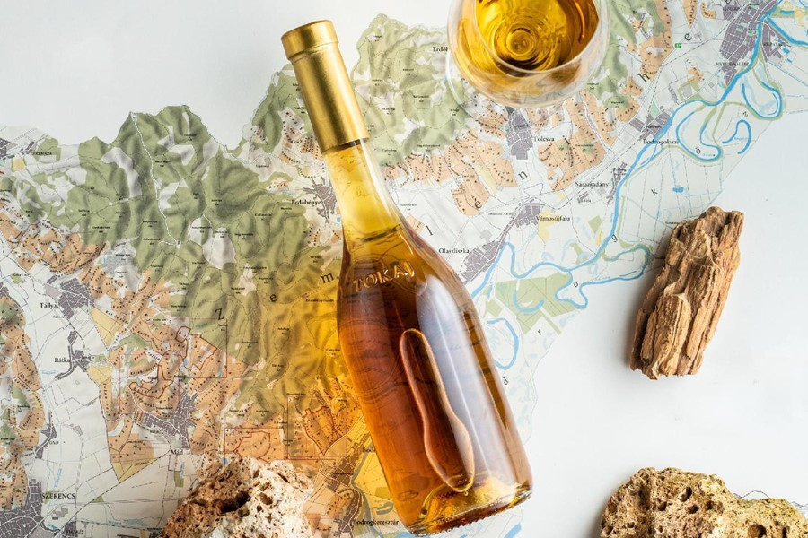
Tokaji Aszú · La región, el suelo volcánico y la botella · Patrimonio de la Humanidad desde 2002
Por qué solo en Tokaj: volcanes, niebla y el microclima perfecte
La región de Tokaj no produce el mejor vino dulce del mundo por casualidad. Sus suelos de origen volcánico, formados hace unos 15 millones de años, aportan a los vinos una mineralidad intensa y característica. Las suaves colinas orientadas al sur o sureste, a entre 120 y 240 metros de altitud, retienen el calor otoñal. Y la confluencia de los ríos Tisza y Bodrog —junto a la barrera natural de los Cárpatos— crea nieblas matinales que se disipan a mediodía, exactamente la secuencia de humedad y calor que la Botrytis cinerea necesita para trabajar.
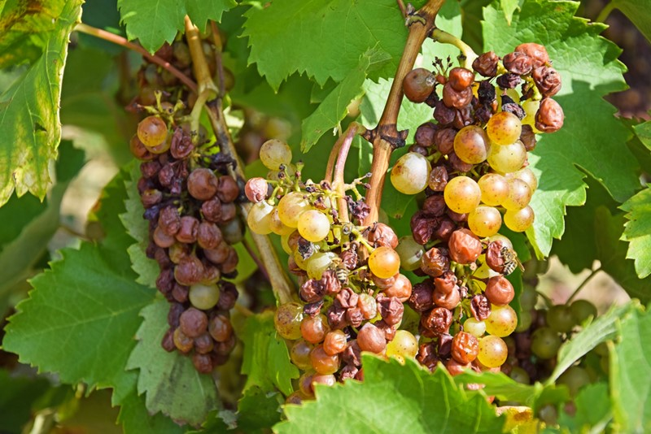
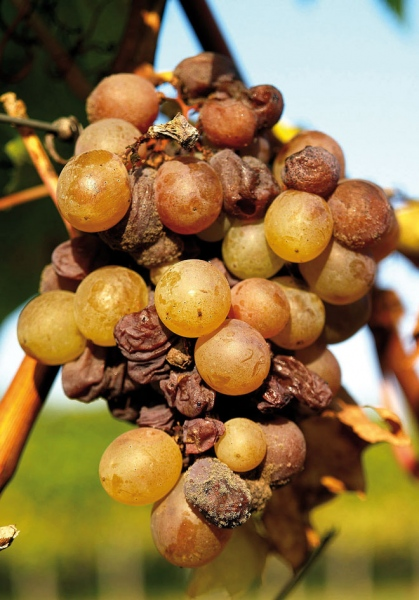
La variedad protagonista es la furmint, que ocupa casi el 70% del área cultivada. Es una uva de vendimia tardía, con piel fina —perfecta para la botrytis— y una acidez natural tan elevada que actúa como contrapeso al dulzor y convierte al vino en uno de los más longevos del mundo. La hárslevelű aporta aromas florales de tilo y miel con una acidez más suave, y la sárga muskotály —un tipo de moscatel— suma notas aromáticas en pequeñas cantidades. Las tres variedades sobrevivieron a la filoxera en 1885 y siguen siendo las únicas permitidas para elaborar Tokaj Aszú.
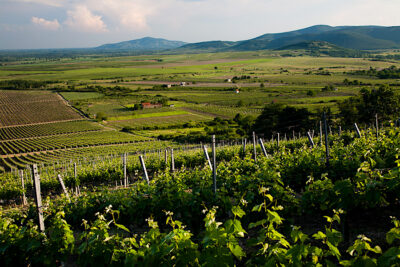
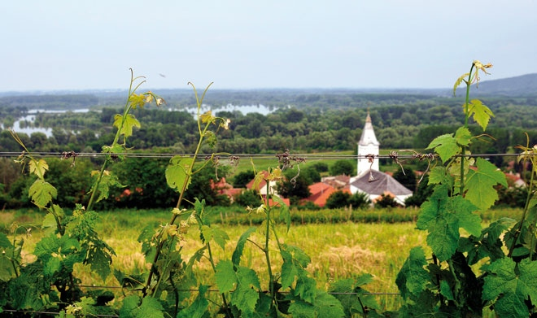
Qué son los puttonyos y cómo miden el dulzor del vino
Las uvas botritizadas se recogen en cestos de mimbre de 25 kilos llamados puttonyos. Una vez reducidas a pulpa —la pasta aszú—, se añaden al mosto base obtenido de uvas sanas y se maceran hasta 36 horas. La mezcla se prensa y pasa a barricas de roble húngaro de 136 litros —los gönc— donde fermenta y envejece durante un mínimo de tres años. El número de puttonyos añadidos determina el nivel de dulzor del vino final: a más puttonyos, más concentración de azúcar, más complejidad y más años de crianza necesarios.
De 3 a 6 puttonyos: cuantos más, mejor
Kilómetros de laberinto subterráneo y el moho que protege el vino
Una de las imágenes más impactantes de Tokaj son sus bodegas: túneles excavados en la roca volcánica, a más de ocho metros de profundidad, donde la temperatura se mantiene estable entre 8 y 12ºC durante todo el año. Las galerías de algunas bodegas suman kilómetros de longitud, con miles de barricas de roble húngaro alineadas en la oscuridad. Las paredes están recubiertas de un moho oscuro y algodonoso, el Cladosporium cellare, que absorbe los vapores del alcohol y regula la humedad. Lejos de ser un problema, este moho es considerado parte esencial del proceso: su presencia protege al vino y contribuye a su carácter oxidativo durante el largo envejecimiento.
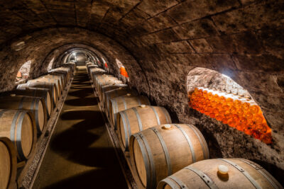
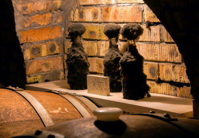
Oremus: cuando Vega Sicilia apostó por Tokaj
Tras la caída del muro de Berlín en 1989, Hungría abrió sus bodegas a la inversión privada. La familia Álvarez, propietaria de Vega Sicilia, vio en Tokaj algo que le pareció único: historia, singularidad y una cepa —la furmint— con capacidad para elaborar no solo vinos dulces extraordinarios sino también vinos secos de gran personalidad. En 1993 fundaron Bodegas Oremus, la única bodega que Vega Sicilia gestiona fuera de España. Su Eszencia —solo 500 botellas al año, con 3 grados de alcohol— es considerado uno de los vinos más raros y suntuosos del mundo.
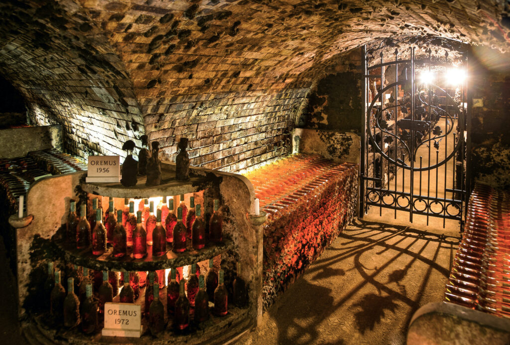
Bodegas Oremus · Añadas de 1956 y 1972 · La gestión de Vega Sicilia ha recuperado el esplendor histórico de Tokaj
Eszencia: el vino con solo 3 graus que la UE acepta como vino
Por encima de los 6 puttonyos existe algo aún más extraordinario: la Eszencia. Se elabora únicamente con el jugo que fluye por gravedad —sin prensado— de las uvas botritizadas mientras esperan en cubas al final de la vendimia. Su concentración de azúcar es tan extrema que puede tardar años en fermentar y su graduación alcohólica no supera los 3 grados. La Unión Europea hace una excepción con este producto y lo acepta como vino, dado su carácter único. La de Oremus fermenta dos años en damajuanas de cristal y envejece 24 meses más en barrica. Solo se producen 500 botellas al año. Es técnicamente el vino más dulce elaborado en Europa.
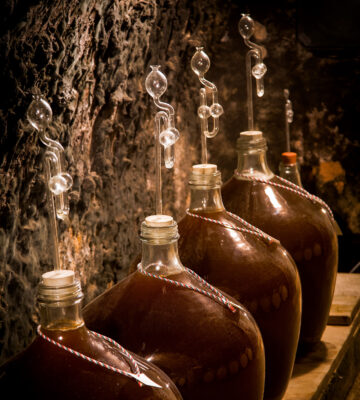
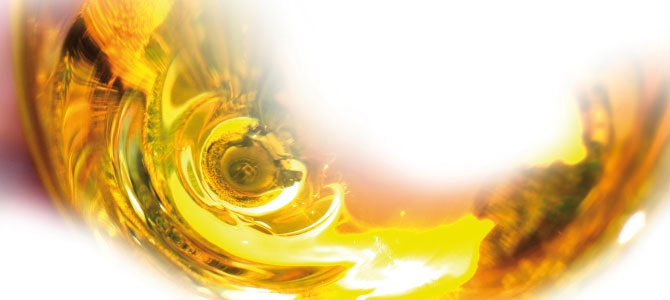
Vinum Regum, Rex Vinorum: el vino de los reyes y el rey de los vinos.
Atribuïda a Lluís XIV de França · Frase que identifica el Tokaji Aszú des del segle XVII
Cómo disfrutar un Tokaji Aszú: temperatura, maridaje i paciència
Un Tokaji Aszú se sirve entre 11 y 13ºC, ligeramente más frío que un vino blanco seco convencional. En la copa es de un ámbar profundo, casi dorado, con aromas que recuerdan a la miel, el membrillo, la naranja confitada y el anís, sobre un fondo de humo, café y caramelo adulto. La acidez —característica de la furmint— actúa como contrapeso del dulzor y evita que resulte empalagoso. Los mejores ejemplares tienen una capacidad de envejecimiento que puede superar los cincuenta años.
El maridaje clásico es con foie gras —la acidez corta la grasa con una limpieza que pocos vinos pueden igualar—, con quesos azules sobre tostada y mermelada de cebolla, con postres de fruta de hueso o con pato y pera. También como aperitivo, solo, en copa pequeña, antes de la mesa. En esa función es imbatible. Una copa de Tokaji Aszú antes de sentarse a cenar es una de las bienvenidas más elegantes que puede ofrecer una mesa.
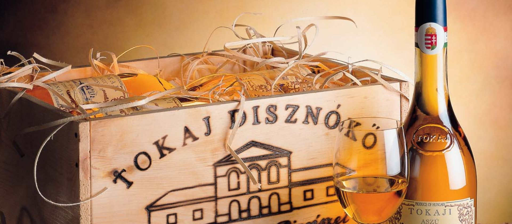
Tokaji Aszú · Un vino que se regala, se guarda y se descorcha en los momentos que merecen la pena
Fuentes consultadas: Vinetur, Sobremesa (Pedro Grifol), Aprender de Vino, Vinos y Pasiones, 7 Caníbales, Petit Celler
Newsletter
¿Quieres recibir la próxima crónica antes que nadie?
Crónicas de los restaurantes visitados, vinos recomendados y novedades del Camp de Tarragona. Una vez al mes, sin ruido.
Sin spam · Baja cuando quieras.
Más artículos de vins
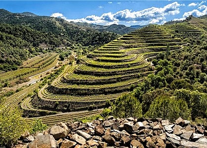
VinsEls Cinc Magnífics · DOQ Priorat
Cinco forasteros, un territorio abandonado y la convicción de que de aquella tierra negra podía nacer un vino que el mundo nunca había probado.
Leer → Curiositats
Curiositats
Jean Leon · El taxista de Beverly Hills que cambió el vino español
Ceferino Carrión cruzó los Pirineos a pie y sirvió la última cena a Marilyn Monroe.
Leer →